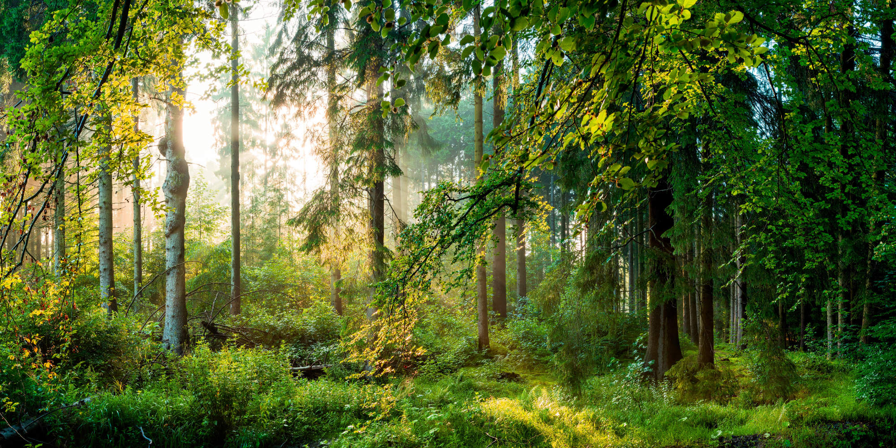

Top 3 lugares preferidos por el perro
Playa:

Mocha adora la playa porque le encanta sentir la suave arena bajo sus patitas, correr tras las olas y disfrutar de la brisa marina. El sonido relajante de las olas y la sensación del agua en sus patas hacen de la playa su lugar favorito para divertirse y relajarse.
Rocas:

Este intrépido perrito encuentra gran fascinación en explorar roqueríos. Le encanta trepar entre las rocas, descubrir pequeños escondites y sentir la aventura que cada grieta y recoveco ofrece. El roquerío es su parque de juegos natural, lleno de emocionantes descubrimientos.
Bosque Frondoso:
La densidad y variedad de árboles del bosque frondoso cautivan a Mocha. Le gusta corretear entre los árboles, seguir rastros intrigantes y disfrutar de la sombra fresca. La naturaleza vibrante y los sonidos de aves crean un entorno mágico que a Mocha le resulta simplemente encantador.